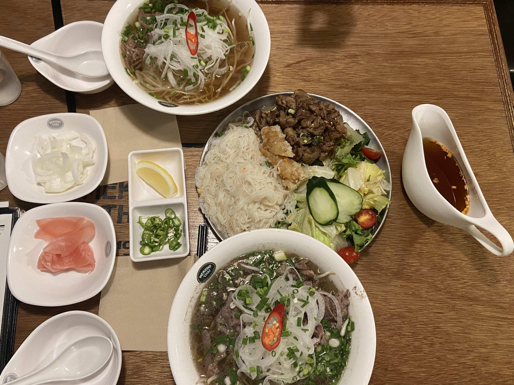
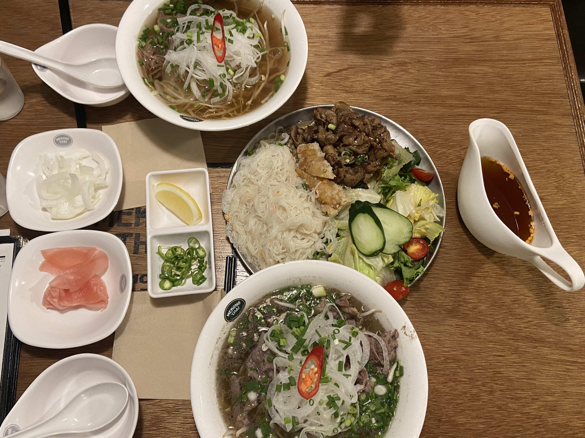

- 좋아하는 것
- 이번 1학기, 여름방학 목표
- 버킷 리스트
- github
- 운동하기(축구, 수영, 헬스) 수영선수 7~8년 정도 했고 군대 전역하고 나서 진짜 매일 술 먹으니까 10kg넘게 쪄서 지금은 매일 헬스장가서 운동하고 있어요..
- 영화보기-(코미디, 전쟁영화) 영화보는거 진짜 좋아해서 웬만하면 한달에 한번씩 영화볼려고 하고 있습니다!
- 맛집 탐방 다니기, 맛집 사진찍기 분위기 좋은 카페가서 그 카페 시그니쳐 먹는거 좋아하고 맛집 진짜 많이 다녀요,, 제 인스타에 오면 맛집 많이 볼 수 있습니다!
- 새벽에 드라이브하기 보통 연인들과는 반대로 저 같은 경우는 여자친구가 차 가지고 있어서 여행이나 새벽에 드라이브 자주 하는 편이에요.
- 새로운 사람들과 어울리기 전 새로운 사람들 만나는거 되게 좋아하고 같이 술 마시면서 친해지는 거 좋아합니다~
좋아하는 것
 
